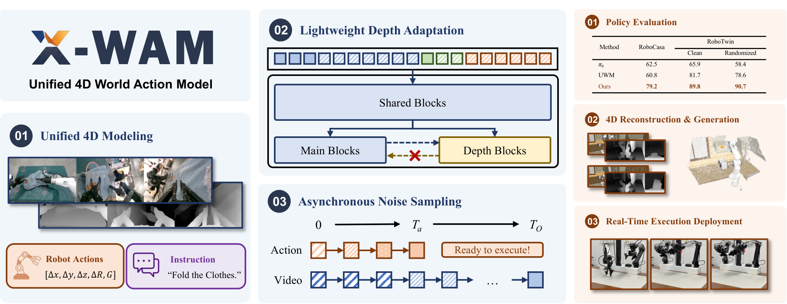
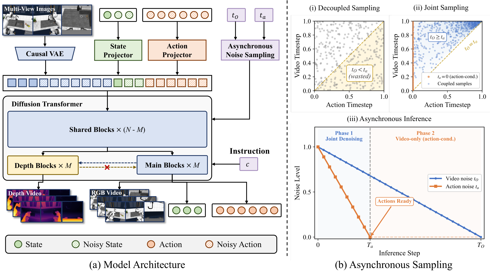
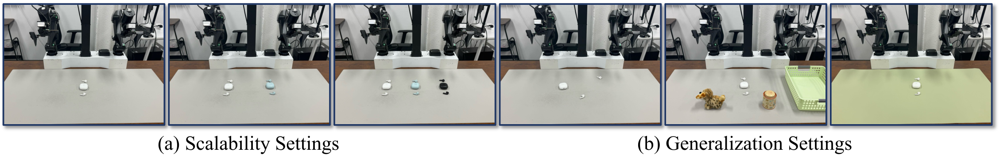
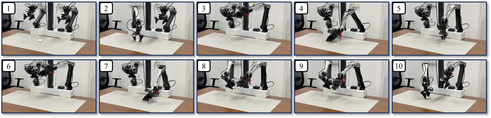

Unified 4D World Action Modeling from Video Priors with Asynchronous Denoising
1. 论文速览
难度评级：★★★★★。需要理解 video diffusion/DiT、flow matching、world action model、RGB-D/多视角几何、机器人 imitation learning 与异步采样推理。
关键词：World Action Model4D World ModelingRGB-D GenerationAsynchronous Noise SamplingRobotic Foundation Model
| 阅读定位项 | 内容 |
|---|---|
| 论文要解决什么 | 已有 unified world action models 主要停留在 2D pixel-space，缺少显式 3D 空间意识；同时，动作要低延迟，视频/世界生成要高质量，两者采样步数需求冲突。 |
| 作者的方法抓手 | 从 Wan2.2-TI2V-5B 视频 DiT 初始化，联合预测未来 RGB、depth、state 和 action；复制最后 $M$ 个 DiT block 构造 depth branch；用 ANS 让训练噪声分布匹配异步推理。 |
| 最重要的结果 | RoboCasa 平均 SR 79.2%，RoboTwin 2.0 clean/randomized 为 89.8%/90.7%；RoboCasa 4D 重建在 RGB、depth 和 point cloud 指标上超过对比方法。 |
| 阅读时要注意的点 | 核心不只是“加 depth”，而是如何在不破坏预训练 video prior、不显著增加 action latency 的前提下，把 depth、action 和 video 放进统一去噪序列。 |
核心贡献清单
- 提出 unified 4D World Action Model X-WAM。一个框架同时服务 video generation、3D reconstruction、policy success 和 efficient action execution。
- 提出 lightweight depth adaptation。通过复制 DiT 后部 block 形成 depth prediction branch，depth branch 单向读取 main branch，以尽量保留预训练 video backbone 的分布和参数完整性。
- 提出 Asynchronous Noise Sampling。训练时从满足 $t_O\ge t_a$ 的联合分布采样，推理时 action 用较少步数快速解码，video 继续完整去噪。
- 大规模预训练并做多层验证。在 5,873.9 小时、1,492,026 episodes 机器人数据上预训练，并在 RoboCasa、RoboTwin 2.0、4D reconstruction 和真实双臂机器人任务上评估。
2. 动机
2.1 要解决什么问题
论文把 embodied AI 当前路线分成 policy models 与 world models 两类。VLA/policy models 擅长 instruction following 和 action prediction，但缺少动作如何在真实世界连续展开的几何直觉和物理意识；world models 能模拟未来观察，但通常不能直接输出可执行动作。近期 WAM/UWM 尝试统一 video generation 和 action prediction，但仍主要在 2D pixel-space 工作。
作者认为，真实物理世界本质是三维的；只做 2D 像素预测会丢失几何结构，使模型可能生成物理上不合理的未来，也难以进行几何忠实的 3D reconstruction。
2.2 已有方法的局限
- VLA：能从语言和视觉到动作，但显式空间建模较弱，特别是需要精细插入、长时序进展理解和几何推理的任务。
- World models：能生成未来观察，但不直接生成 executable robot actions。
- 现有 unified WAM/UWM：开始联合 video/action，但局限在 2D pixel-space，缺少 explicit 3D spatial awareness。
- 异步采样前作：为了 action latency 会 decouple video/action timestep；如果训练时独立采样各模态 timestep，会产生测试时不会出现的 $t_O
2.3 本文的解决思路
X-WAM 的高层思路是：以预训练视频 diffusion model 的强视觉先验为基础，把机器人观测扩展到 multi-view RGB-D future generation；depth 用轻量分支适配而非重建整个模型；action 和 video 共享统一去噪框架，但通过 ANS 让 action 先完成去噪、video 继续去噪。
3. 相关工作梳理
3.1 论文自述的相关工作
| 技术线 | 论文如何定位 | X-WAM 的区别 |
|---|---|---|
| Unified World Action Modeling | UWM、Motus、VideoVLA、Genie Envisioner 等把 video generation 和 action prediction 放进一个框架；DreamZero、LingBot-VA、GigaWorld-Policy 等使用 causal masks、KV caching 或 timestep decoupling 来降低延迟。 | X-WAM 进一步加入 explicit spatial information，并指出独立 timestep sampling 与异步推理分布不匹配。 |
| 3D Modeling in Embodied Models | 一类在 VLA 中用 3D features 作 target/supervision；另一类直接使用 point cloud/3D representations。World model 方向使用 3D supervision、multi-view consistency、3DGS 或 feed-forward reconstruction models。 | X-WAM 将 explicit 3D information 引入 unified world action modeling，并在一个模型里同时做 video generator、3D reconstruction system 和 policy model。 |
3.2 直接前作对比
| 维度 | VLA policy | UWM / WAM | 3D world models | X-WAM |
|---|---|---|---|---|
| 核心思路 | 从 vision-language observation 到 motor command。 | 联合未来 video 和 action。 | 强调 3D representation 或 reconstruction。 | 统一 future RGB-D video、state、action、4D reconstruction。 |
| 关键假设 | 预训练 VLM/VLA 表示可迁移到机器人控制。 | video prior 能提升物理理解与泛化。 | 显式几何能提升空间推理。 | video prior + lightweight depth adaptation + ANS 可同时获得几何、生成和控制收益。 |
| 主要限制 | 几何/物理展开意识不足。 | 多在 2D pixel-space，或 timestep 分布不匹配。 | 不一定直接输出实时动作。 | 仍有 fixed context 和较高 latency，作者在 Limitations 中明确说明。 |
| 实验对比 | $\pi_0$, $\pi_{0.5}$, GR00T-N1.5, XR-0。 | UWM, DreamZero, Cosmos Policy, Motus, GigaWorld-Policy。 | Robot4DGen, DreamZero+DA3, X-WAM w/o depth+DA3。 | RoboCasa 79.2，RoboTwin randomized 90.7，真实 earphone packing 多数设置高于 XR-0。 |
4. 方法详解
4.1 方法概览
输入是语言指令 $c$、初始 proprioceptive state $s_0$ 和 multi-view initial RGB observations $O_0$。模型联合预测未来 RGB videos $O_{1:H}$、depth videos $D_{1:H}$、future states $s_{1:H}$ 和 actions $a_{1:K}$。论文设置中，给 1 个 conditioning RGB frame 和 1 个 initial state，预测 $H=8$ 未来 RGB frames、$H=8$ future states、$K=32$ future actions；动作频率是视频帧率的 $K/H=4\times$。


4.2 方法演变脉络
VLA / policy model → WAM/UWM → X-WAM。第一步从直接预测动作开始；第二步把 future video generation 与 action prediction 联合起来；X-WAM 再引入 RGB-D/4D spatial reconstruction，并用 ANS 处理 action latency 与 video quality 的冲突。
4.3 核心设计与数学推导
4.3.1 统一 denoising sequence
| $\mathbf{z}_{O}$ | RGB video latent，由原始 causal VAE encoder $\mathcal{E}$ 得到。 |
| $\mathbf{z}_s$ | proprioceptive state 经过 learnable $\mathrm{MLP}_s$ 投影后的 latent。 |
| $\mathbf{z}_a$ | action 经过 learnable $\mathrm{MLP}_a$ 投影后的 latent。 |
| $H,K$ | 视频/状态 horizon 与动作 horizon；论文中 $H=8,K=32$。 |
初始观测 $\mathbf{z}_{O_0}$ 和初始状态 $\mathbf{z}_{s_0}$ 在去噪过程中固定，timestep 设为 $t=0$，即作为 clean condition。
4.3.2 Wrist camera pose derivation
$\mathbf{T}_{\text{ee}}\in SE(3)$ 是末端执行器位姿，$\mathbf{T}_{\text{h2e}}$ 是固定 hand-to-eye calibration matrix。这样 multi-view RGB-D fusion 可利用机器人结构约束，而不必额外把 camera extrinsics/ray maps 作为 token。
4.3.3 Lightweight Depth Adaptation
| $N$ | 原始 DiT block 总数。 |
| $M$ | 复制为 depth branch 的最后 block 数；附录给出 $M=10$。 |
| $\mathbf{Z}_D^{(j)}$ | 第 $j$ 个 depth branch hidden state。 |
| $\mathbf{Z}_{\text{m}}^{(j)}$ | main branch hidden state。 |
depth map 被复制 3 次为 pseudo-RGB，用同一个 causal VAE 编码/解码；depth branch 预测 inverse depth，并用 MSE 监督。该设计避免 sequence concatenation 的 attention cost 翻倍，也避免 channel concatenation 改变预训练输入分布。
4.3.4 Asynchronous Noise Sampling
第一种情况对应 action-conditioned video generation：动作已干净，视频还在去噪。第二种情况对应 asynchronous joint generation：因为 $b\in[0,1]$，所以 $t_O=t_a+(1-t_a)b\in[t_a,1]$，天然满足 $t_O\ge t_a$。
补充推导：为什么这个采样覆盖异步推理分布
4.3.5 Flow matching loss 与总目标
$m$ 可表示 observation/video、state 或 action 模态；$\mathbf{z}_m^0$ 是 clean latent，$\boldsymbol{\epsilon}_m$ 是 Gaussian noise。论文使用 flow matching interpolation：$\mathbf{z}^t=(1-t)\mathbf{z}^0+t\epsilon$，其路径速度为 $\epsilon-\mathbf{z}^0$。
附录实现细节给出 $\lambda_s=1.0,\lambda_a=1.0,\lambda_D=1.0$。附录 Training Details
4.4 实现要点（面向复现）
X-WAM training sketch Input: O0, s0, language c, future RGB O1:H, depth D1:H, states s1:H, actions a1:K 1. Encode RGB with causal VAE; project states/actions with MLPs 2. Sample coupled timesteps (t_O, t_a) using ANS, ensuring t_O >= t_a 3. Interpolate video/state/action latents with Gaussian noise 4. Concatenate [z_O0, z_O1:H, z_s0, z_s1:H, z_a1:K] 5. Run shared DiT trunk; run interleaved main branch and depth branch 6. Predict velocities for RGB/state/action and inverse depth 7. Optimize L_total = L_O + lambda_s L_s + lambda_a L_a + lambda_D L_depth Inference: 1. Run action denoising for T_a steps and dispatch action chunk 2. Continue video denoising to T_O if high-fidelity RGB-D/4D world output is needed
5. 实验
5.1 实验设置
| 项目 | 设置 |
|---|---|
| 预训练数据 | 7 个数据源，共 1,492,026 episodes、5,873.9 小时，包含真实 AgibotWorld-Beta/DROID 和仿真 InternA1、RoboCasa MimicGen、RoboTwin 2.0。附录 Pretraining Data |
| 仿真策略评估 | RoboCasa 24 tasks；RoboTwin 2.0 50 tasks，含 clean 和 randomized 设置。每个任务 100 episodes。附录 Inference |
| 4D reconstruction/generation | RoboCasa 上报告 RGB PSNR/SSIM/LPIPS，Depth AbsRel/$\delta_1$，Point Cloud Chamfer Distance。 |
| 真实机器人 | AC One dual-arm platform，一台 main camera + 两台 wrist cameras，分辨率 $320\times240$。任务为 earphone packing。附录 Real Robot Experiments |
| 主要 baselines | $\pi_0$, $\pi_{0.5}$, GR00T-N1.5, UWM, DreamZero, Cosmos Policy, GigaWorld-Policy, Motus, Robot4DGen, XR-0 等；附录说明部分结果直接来自相关 benchmark 论文。附录 Baseline Details |
| 代码/项目页 | https://sharinka0715.github.io/X-WAM/ |
训练配置完整表
| 阶段 | 硬件 | Batch | LR | Steps | 其他 |
|---|---|---|---|---|---|
| Large-scale pretraining | 256 NVIDIA H20 GPUs | per-GPU 8，总 2048 | $1\times10^{-4}$ peak | 40,000 | AdamW；1000 warmup；cosine decay to 0；$H=8$；$M=10$；$p=0.5$；$\lambda_s=\lambda_a=\lambda_D=1.0$。 |
| Benchmark fine-tuning | 32 NVIDIA H20 GPUs | per-GPU 4，总 128 | $3\times10^{-5}$ | 20,000 | 同样 warmup + cosine decay；RoboCasa 使用 raw actions；RoboTwin 2.0 将 relative actions 转成 absolute end-effector poses 后执行。 |
| Inference | 未指定单卡型号 | - | - | $T_a=10,T_O=50$ | UniPC scheduler；classifier-free guidance scale = 1.0。 |
预训练数据表
| Dataset | Source | Episodes | Duration h |
|---|---|---|---|
| AgibotWorld-Beta | Real | 866,562 | 2,221.5 |
| DROID | Real | 74,734 | 280.3 |
| InternA1-Aloha | Sim | 184,803 | 1,337.3 |
| InternA1-Genie1 | Sim | 50,638 | 174.0 |
| InternA1-Lift2 | Sim | 231,018 | 1,464.7 |
| RoboCasa MimicGen | Sim | 56,771 | 282.4 |
| RoboTwin 2.0 | Sim | 27,500 | 113.7 |
| Total | - | 1,492,026 | 5,873.9 |
5.2 主要结果
Policy Evaluation
| Benchmark | Method | Result |
|---|---|---|
| RoboCasa 24 tasks | $\pi_0$ / GR00T-N1.5 | 62.5 / 64.1 Avg SR |
| RoboCasa 24 tasks | UWM / DreamZero / Cosmos Policy | 60.8 / 62.4 / 67.1 Avg SR |
| RoboCasa 24 tasks | X-WAM | 79.2 Avg SR |
| RoboTwin 2.0 clean | Motus best listed baseline | 88.7 |
| RoboTwin 2.0 randomized | Motus best listed baseline | 87.0 |
| RoboTwin 2.0 | X-WAM | 89.8 clean / 90.7 randomized |
RoboCasa 表明 X-WAM 比最佳列出 baseline Cosmos Policy 高 12.1 个百分点。RoboTwin 2.0 中 X-WAM 在 clean 和 randomized 两列均为最高，randomized 还高于 clean，论文据此强调其随机化设置下的泛化表现。
4D Reconstruction and Generation
| Method | PSNR↑ | SSIM↑ | LPIPS↓ | AbsRel↓ | $\delta_1$↑ | CD↓ |
|---|---|---|---|---|---|---|
| DreamZero + DA3 | 21.12 | 0.7788 | 0.1580 | 0.1362 | 0.8594 | 0.0680 |
| Robot4DGen | 22.67 | 0.8207 | 0.1026 | 0.0736 | 0.9443 | 0.0134 |
| X-WAM w/o depth + DA3 | 23.09 | 0.8916 | 0.0548 | 0.1045 | 0.9089 | 0.0401 |
| X-WAM | 23.46 | 0.8942 | 0.0513 | 0.0349 | 0.9738 | 0.0049 |
RGB 指标和几何指标同时提升。尤其 point cloud CD 从 Robot4DGen 的 0.0134 降到 0.0049，说明 depth branch 对几何重建有直接贡献。
5.3 消融实验
| 消融组 | Variant | SR↑ | Latency ms↓ | 关键结果 |
|---|---|---|---|---|
| Depth architecture | No depth | 63.0 | 1033 | 无 depth/point cloud 指标。 |
| Depth architecture | Sequence concatenation | 68.7 | 1888 | 质量最高但 latency 明显增加。 |
| Depth architecture | Channel concatenation | 64.2 | 1266 | 改变输入分布，SR 与质量均非最优。 |
| Depth architecture | Interleaved branch | 67.8 | 1033 | 接近 sequence concat 的质量，同时保持 no-depth latency。 |
| Noise schedule | Sync train + Sync infer | 66.4 | 4665 | 视频质量较高但动作延迟大。 |
| Noise schedule | Decoupled train + Async infer | 67.2 | 1033 | 快，但视频/几何质量下降。 |
| Noise schedule | ANS train + Async infer | 67.8 | 1033 | 保持低 latency，同时恢复 RGB/depth/point cloud 质量。 |
作者对 depth architecture 的解释是：sequence concatenation 虽然效果略高，但 attention cost/latency 太高；interleaved branch 在保持主干不受 depth token 影响的情况下取得折中。对 ANS 的解释是：独立 decoupled sampling 导致训练/推理分布不一致，而 ANS 的 coupled sampling 修复这一点。
5.4 补充实验（来自附录）
RoboCasa per-task
附录列出 24 个 RoboCasa 任务，X-WAM 的低分任务包括 TurnOffStove 35.0、CoffeeSetupMug 45.0、PnPMicrowaveToCounter 57.0；高分任务包括 CloseDrawer 100.0、CloseSingleDoor 96.0、CoffeePressButton 96.0、OpenSingleDoor 96.0。附录 Detailed Results
RoboTwin 2.0 per-task
附录列出 50 个 RoboTwin 2.0 任务的 clean/randomized 成功率。前 24 个任务中，多数任务在 clean/randomized 均接近或达到 90-100，例如 adjust_bottle 100.0/99.0、click_bell 100.0/100.0、lift_pot 100.0/99.0；也有 hanging_mug 46.0/55.0 这类较低任务。附录 Detailed Results
真实机器人实验

| Setting | XR-0 Progress / Time | X-WAM Progress / Time |
|---|---|---|
| Pack 1 earphone | 100.0 (24/24), 54.66s | 100.0 (24/24), 41.63s |
| Pack 2 earphones | 79.1 (38/48), 115.44s | 93.8 (45/48), 113.25s |
| Pack 3 earphones | 63.9 (46/72), 195.66s | 68.0 (49/72), 160.72s |
| Novel placements | 58.3 (14/24), 89.63s | 70.8 (17/24), 46.68s |
| Unseen tablecloth | 66.7 (16/24), 65.73s | 66.7 (16/24), 62.01s |
| Unseen distractors | 66.7 (16/24), 76.32s | 75.0 (18/24), 51.53s |
任务被拆成 4 个阶段：抓取耳机盒、打开盒盖、抓取并插入耳机、合盖并放回桌面；每阶段 25% progress。每个 setting 6 trials。作者还说明曾尝试同数据训练 $\pi_{0.5}$，但其未完成完整 episode，仅在 single-earphone task 达到 25%-50% progress，因此未列入表格。附录 Real Robot Experiments

6. 复现信息汇总
| 复现项 | 论文给出的信息 | 注意点 |
|---|---|---|
| 模型底座 | Wan2.2-TI2V-5B video diffusion transformer。 | 需要确认底座权重许可、可下载性和显存需求。 |
| 数据规模 | 1.49M episodes / 5873.9h。 | 完整复现预训练成本极高；可优先复现实验中的 fine-tuning 或小规模 ablation。 |
| 硬件 | 预训练 256 H20；fine-tuning 32 H20。 | 论文明确给出训练硬件，但未给出单次完整训练 wall-clock time。 |
| 核心超参 | pretrain LR $1e^{-4}$，40k steps；finetune LR $3e^{-5}$，20k steps；$T_a=10,T_O=50$；CFG=1.0。 | optimizer betas、weight decay 等细节若未在正文列出，需要项目代码确认。 |
| 深度监督 | RoboCasa/RoboTwin fine-tuning 通过 simulator replay official demonstrations 获得 GT depth。 | 真实数据的 depth/标定流程需以项目材料为准。 |
| 真实机器人 | AC One dual-arm，1 main camera + 2 wrist cameras，$320\times240$。 | 复现需要双臂平台和 earphone packing 任务环境。 |
7. 分析、局限与边界
7.1 这篇论文最有价值的地方
基于论文自身结果，X-WAM 的价值在于把 unified WAM 从 2D video/action joint modeling 推到 4D RGB-D/action joint modeling，并给出一个计算上较轻的 depth adaptation 方案。这个设计在策略成功率、RGB 质量、depth 质量和 point cloud 几何指标上都有对应实验支持。
7.2 结果为什么站得住
- 任务覆盖广：RoboCasa 24 tasks、RoboTwin 2.0 50 tasks、真实双臂 earphone packing。
- 指标覆盖多：不仅报告 policy SR，还报告 RGB PSNR/SSIM/LPIPS、Depth AbsRel/$\delta_1$、Point Cloud CD。
- 消融直接对应方法模块：depth architecture ablation 对应 lightweight depth branch；noise schedule ablation 对应 ANS。
- 附录给出任务级结果和训练细节：预训练数据、GPU 数、batch、LR、steps、inference steps 等复现关键信息被列出。
7.3 论文已给出的结果分析与解释
作者对真实机器人结果的解释是：X-WAM 的 explicit 3D spatial awareness 对精确插入操作和连续 packing 阶段更有帮助；novel placements 的提升尤其说明模型需要把空间推理泛化到未见物体配置。作者还指出较短 completion time 说明 asynchronous denoising with real-time chunking 不仅降低推理等待，也可能减少纠正动作。
7.4 作者自述的局限性
- 固定长度上下文：当前框架只处理 fixed-length context window，没有 historical information 或 autoregressive rollout；长时程任务中，如果当前观察不足以区分任务阶段，可能导致次优决策。
- 推理延迟高于专用 policy：统一生成高维视频和低维动作带来额外 latency；作者写到 X-WAM 使用 8 denoising steps 时约 300 ms per action chunk。虽然 real-time chunking 可重叠计算和执行，但机器人仍可能基于若干帧之前的预测行动。
7.5 适用边界与未来工作
适用边界包括：任务需要空间几何和未来世界建模收益，且能接受比轻量 VLA 更高的推理计算；训练端要能获得大量机器人数据和必要 depth/pose 信息。作者明确提出的未来方向包括加入 history conditioning、KV caching、autoregressive inference 以支持更长 temporal horizon，以及使用 distillation、consistency models 或更激进异步调度进一步降低 latency。